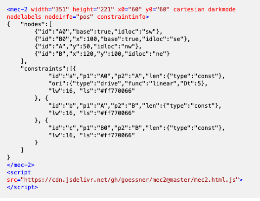

Mec2 comes with a custom HTML element which allows to implement models directly into the page without the necessity of running extra boilerplate code. The aim of this HTML element is to minimize the implementation overhead of the user, while maintaining all features mec2 has.
The overall styling is handled by respective properties of the `mec-2` element:
- `width`: Width of the element in `px`.
- `x0`: x-origin of the model.
- `y0`: y-origin of the model.
- `cartesian:`: Whether `cartesian` is true or not (see Views .
- `grid`: Show `grid` in background.
- `gravity`: Activate gravity.
- `pausing`: Pause the model.
- `hidenodes`: Hide nodes.
- `constraintlabels`: Show labels of constraints.
- `loadlabels`: Show labels of loads.
- `nodelabels`: Show labels of nodes.
The syntax of the `innerHTML` is as straight forward as `mec2` is: The model embedded into the `innerHTML` of the element is the same as they are defined in the default way, but as `JSON`. Note: Don't forget to use quotations (e.g. "x") for the properties, since the `g2-element` interprets the `innerHTML` using the JSON format. You can issue asJSON on any model designed in the "normal" way to get the JSON description of said model.